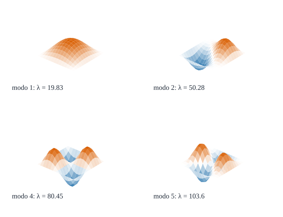
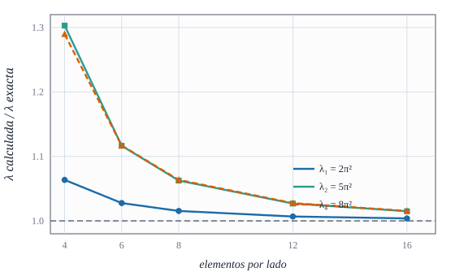
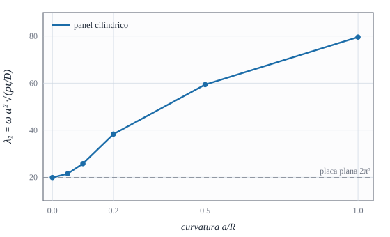

De un grado de libertad a una placa: frecuencias, modos y parámetros adimensionales

Figura 34.1: Cuatro modos de vibración de una placa cuadrada simplemente apoyada (malla de \(14\times14\)): el fundamental, el segundo y los de la cuarta y quinta frecuencias. Naranja: la placa sube; azul: baja. Los \(\lambda\) son los parámetros adimensionales de frecuencia. Cálculo calculado.
A qué frecuencias vibra una lámina cuando se la golpea y se la deja libre, y de qué depende cada una
Objetivos y prerrequisitos
Objetivos. Al terminar el tema sabrás:
pasar del oscilador de un grado de libertad a una lámina con infinitas frecuencias propias;
escribir el parámetro adimensional\(\lambda=\omega a^2\sqrt{\rho t/D}\) y usarlo para comparar placas de distinto tamaño y material;
calcular las frecuencias de una placa simplemente apoyada y comprobar los resultados de elementos finitos;
explicar cómo cambian las frecuencias con el espesor (cortante, inercia de giro) y con la curvatura;
leer los modos como patrones de líneas nodales.
Prerrequisitos.E9 (problema de autovalores) y F1. Para el oscilador de un grado de libertad, véanse las unidades de vibraciones de Resonancia.
NotaExplicación para ingenieros: la regla en el borde de la mesa
Una regla sujeta con la mano al borde de una mesa vibra con un tono grave si sobresale mucho y más agudo si sobresale poco: la frecuencia sube con la rigidez y baja con la masa, \(\omega\sim\sqrt{\text{rigidez}/\text{masa}}\). Una lámina es como una regla en dos dimensiones, y no tiene un tono sino muchos (un «instrumento»): el más grave (modo fundamental) es una joroba única; los siguientes tienen líneas nodales (zonas que no se mueven) que dividen la placa en regiones que suben y bajan alternadas, como los dibujos de arena de una placa que suena. Una placa curva es más rígida que una plana de la misma masa y suena más aguda.
34.1 Del oscilador a la lámina
Un oscilador de un grado de libertad (\(m\ddot x+kx=0\)) tiene una frecuencia \(\omega=\sqrt{k/m}\). Una estructura discretizada con \(N\) g.d.l. tiene un sistema \(\mathbf M\ddot{\mathbf d}+\mathbf K\mathbf d=\mathbf 0\) y \(N\) frecuencias, cada una asociada a un modo\(\boldsymbol\phi_i\) (ecuación 30.2). Una lámina continua tiene infinitas; el elemento finito aproxima las más graves y las altas pierden precisión (el modo \(i\) está bien resuelto sólo si cabe con holgura en la malla). Cada modo se comporta como un oscilador de un grado de libertad: con \(\mathbf d=\sum q_i\boldsymbol\phi_i\) las ecuaciones se desacoplan en \(\ddot q_i+\omega_i^2q_i=0\).
34.2 La placa simplemente apoyada
Para una placa rectangular \(a\times b\)simplemente apoyada (Kirchhoff) las frecuencias se obtienen con senos, como en la solución de Navier de F1:
Para la placa cuadrada el parámetro adimensional es \(\lambda_{mn}=\pi^2(m^2+n^2)\): \(2\pi^2=19{,}74\) (\(m=n=1\)), \(5\pi^2=49{,}35\) (doble: \((1,2)\) y \((2,1)\)), \(8\pi^2=78{,}96\) y \(10\pi^2=98{,}70\) (doble).
Ejemplo 34.1 (Ejemplo resuelto: una placa de acero) Placa cuadrada de acero de \(1\times1\) m, \(t=10\) mm (\(E=210\) GPa, \(\nu=0{,}3\), \(\rho=7850\) kg/m³), simplemente apoyada. Entonces \(D=210\cdot10^9\cdot(0{,}01)^3/(12\cdot0{,}91)=19\,231\) N·m, \(\rho t=78{,}5\) kg/m² y \[
\omega_{11}=2\pi^2\sqrt{\frac{D}{\rho t}}\,\frac1{a^2}=19{,}74\cdot\sqrt{244{,}98}=\mathbf{308{,}95}\ \text{rad/s}\qquad f_{11}=\mathbf{49{,}17}\ \text{Hz}.
\] Un modo propio de unos 50 Hz: la fundamental de una placa de ese tamaño y espesor. Resultado analítico.
En el Ejemplo 34.1, ¿cuánto vale la frecuencia fundamental \(f_{11}\) de la placa de acero de \(1\times1\) m y \(10\) mm?
\(f=\omega/(2\pi)\) con \(\omega=2\pi^2\sqrt{D/(\rho t)}/a^2\) y \(D=Et^3/(12(1-\nu^2))\).
\(D=19\,231\) N·m, \(D/(\rho t)=244{,}98\), \(\omega=19{,}739\cdot15{,}652=308{,}95\) rad/s, \(f=49{,}17\) Hz.
Si se duplica el lado de una placa (mismo espesor y material), ¿cómo cambia la frecuencia fundamental?
Se duplica
Se divide por 4
Se divide por 2
No cambia
\(\omega\propto1/a^2\): con \(a\to2a\), \(\omega\to\omega/4\). Las placas grandes y delgadas suenan mucho más graves.
34.3 Resultado de elementos finitos
El elemento da los valores de la Figura 34.2 con \(\mathbf M\) consistente (cota superior, tema E8): con una placa delgada (\(t/a=0{,}001\)), el error del modo fundamental es del 6 % con \(4\times4\) elementos, del 1,6 % con \(8\times8\) y del 0,4 % con \(16\times16\); los modos superiores (el segundo y el cuarto) convergen más despacio (30 % con \(4\times4\), 1,5 % con \(16\times16\)), porque necesitan más elementos por semionda.

Figura 34.2: Parámetros de frecuencia de la placa cuadrada simplemente apoyada, cociente entre el valor del elemento y el exacto, frente al número de elementos por lado (\(t/a=0{,}001\)). Siempre por encima de 1 (masa consistente); los modos con más semiondas convergen más despacio. Calculado.
AdvertenciaDos puntos que suelen confundir
Frecuencias dobles. En la placa cuadrada, \((1,2)\) y \((2,1)\) tienen la misma frecuencia, y cualquier combinación de ambos es también un modo: el programa puede devolver una mezcla arbitraria de los dos. En una malla imperfecta, la degeneración se rompe ligeramente.
«Más malla» no mejora los modos altos al mismo ritmo. Para fiarse del modo \(k\) conviene comprobar su convergencia, no la del fundamental.
34.4 Efecto del espesor
La teoría de Kirchhoff (ecuación 34.1) desprecia el cortante y la inercia de giro; ambos bajan las frecuencias de una placa gruesa. Con \(t/a=0{,}1\) la placa simplemente apoyada da \(\lambda_1\approx19{,}2\) con \(16\times16\) elementos, un 3 % por debajo del valor de Kirchhoff de \(19{,}74\) (el elemento sobreestima además ~0,4 % por la malla). Es la razón de usar un elemento de Reissner–Mindlin en láminas de espesor moderado.
34.5 Efecto de la curvatura
Una lámina curva tiene rigidez de membrana frente a la flexión: para abombarse debe estirarse, lo que cuesta mucho más que flexarse, y las frecuencias suben. La Figura 34.3 muestra la primera frecuencia de un panel cilíndrico de lado \(a=1\) simplemente apoyado (con diafragmas) para curvaturas crecientes.

Figura 34.3: Parámetro de frecuencia \(\lambda_1\) de un panel cilíndrico de lado \(a\) y radio \(R\) frente a \(a/R\), con \(t/a=0{,}01\). Con \(a/R=0\) se recupera la placa plana (\(2\pi^2\), gris); la curvatura la cuadruplica con \(a/R=1\). Calculado con \(12\times12\) elementos.
ImportanteIdea clave: la curvatura es rigidez
Con la misma masa y el mismo espesor, una lámina curva suena más aguda que una plana: la curvatura convierte parte de la flexión (barata) en esfuerzo de membrana (caro). Es la misma razón por la que una cubierta curva soporta una carga con muy poco espesor (F3), y por la que el hypar del tema siguiente tiene frecuencias distintas de las de una placa.
TipAplicación real: forjados, cubiertas y membrana del tímpano
ilustrativoObra civil. En forjados y pasarelas la frecuencia fundamental debe quedar lejos de la del paso de las personas; en cubiertas y torres de lámina se compara con la excitación del viento o del sismo. Biomecánica. Estructuras laminares del cuerpo como la membrana timpánica o la calota craneal se estudian mediante sus modos propios. Idea de aplicación sin fuente verificada: es una orientación, no una cita.
34.6 Práctica guiada en Julia
TipEjemplo computacional
calculado (1) Las frecuencias analíticas de ecuación 34.1 y las del elemento, para \(t/a=0{,}01\) y \(0{,}1\). (2) La placa de acero del Ejemplo 34.1. (3) El panel cilíndrico: \(\lambda_1\) frente a la curvatura.
usingGeometria, LinearAlgebracil_x(R) = θ -> [θ[1], R *sin(θ[2]), R *cos(θ[2])]# Placa cuadrada simplemente apoyada (lado 1): primeros λ = ω a² √(ρt/D)functionlambdas_placa(n, t; E =1.0e4, ν =0.3, ρ =1.0, k =5) nodos, conn =malla_rectangular((0, 1.0), (0, 1.0), n, n) K, M, _ =ensamblar(placa_oblicua(π/2), nodos, conn, E, ν, t; ρ) fij =Int[]for j in1:size(nodos, 2) x, y = nodos[:, j]; append!(fij, [gdl(j, 1), gdl(j, 2)]) (x ≈0|| x ≈1|| y ≈0|| y ≈1) &&push!(fij, gdl(j, 3)) (x ≈0|| x ≈1) &&push!(fij, gdl(j, 5)); (y ≈0|| y ≈1) &&push!(fij, gdl(j, 4))end ω, _ =frecuencias(K, M, unique(fij); n = k) D = E * t^3/ (12* (1- ν^2)) ω .*sqrt(ρ * t / D)endexactas = [π^2* (m^2+ k^2) for (m, k) in ((1, 1), (1, 2), (2, 1), (2, 2), (1, 3))](exactas_Kirchhoff =round.(exactas, digits =2), delgada_t001 =round.(lambdas_placa(16, 0.01), digits =2), gruesa_t01 =round.(lambdas_placa(16, 0.1), digits =2))
Cambio de material. Si la placa de acero se sustituye por aluminio (\(E=70\) GPa, \(\rho=2700\) kg/m³, \(\nu=0{,}33\)), ¿sube o baja la frecuencia?
NotaSolución
\(\omega\propto\sqrt{E/\bigl(\rho(1-\nu^2)\bigr)}\): acero \(\sqrt{210\cdot10^9/(7850\cdot0{,}91)}=5422\) y aluminio \(\sqrt{70\cdot10^9/(2700\cdot0{,}891)}=5394\) (1/s·m): la frecuencia es casi igual (un 0,5 % menor en aluminio), porque \(E/\rho\) de ambos materiales es muy parecido; el aluminio sólo gana si se aumenta el espesor sin aumentar el peso.
Líneas nodales. ¿Qué forma tiene el modo \((2,2)\) de una placa cuadrada simplemente apoyada?
NotaSolución
Cuatro lóbulos alternos separados por dos líneas nodales (la mediana vertical y la horizontal): el modo 4 de la Figura 34.1.
Frecuencias dobles. ¿Cuántos modos tienen \(\lambda=5\pi^2\) en una placa cuadrada? ¿Y en una rectangular \(a\times1{,}2a\)?
NotaSolución
Dos \((1,2)\) y \((2,1)\) en la cuadrada. En la rectangular, \(\lambda_{12}\ne\lambda_{21}\) y la degeneración desaparece.
La doy por superada si…
Explico qué es un modo propio y por qué una lámina tiene infinitos.
Calculo \(\lambda_{mn}\) y \(f\) de una placa simplemente apoyada.
Sé que la masa consistente da cota superior y que los modos altos convergen más despacio.
Digo por qué el espesor baja las frecuencias y la curvatura las sube.
Leo un modo por sus líneas nodales.
NotaFuentes, correcciones y qué queda pendiente
Fuentes. Texto autónomo; las frecuencias de una placa simplemente apoyada son un resultado clásico (Kirchhoff) (Timoshenko y Woinowsky-Krieger, s. f.) (datos editoriales sin verificar) y aquí se calculan; vibraciones de láminas, en (Narita y Leissa 1984) para láminas rasantes con apoyos en esquina. Los efectos del espesor y de la curvatura se muestran con cálculo propio, sin comparar con fuente externa.
Qué queda pendiente. No se ha verificado el efecto del espesor frente a una solución de Reissner–Mindlin (con factor de cortante): el elemento usa \(\kappa=1\) (por confirmar); no hay nota histórica por falta de fuente verificada (véase la de Chladni en D7); la «Aplicación real» es una orientación sin fuente; revisión visual de las figuras.
Narita, Y., y A. W. Leissa. 1984. «Vibrations of Corner Point Supported Shallow Shells of Rectangular Planform». Earthquake Engineering and Structural Dynamics 12: 651-61.
Timoshenko, S. P., y S. Woinowsky-Krieger. s. f. Theory of Plates and Shells. McGraw-Hill.
Referencias
Son las mismas que aparecen en el margen, junto al texto.
Narita, Y., y A. W. Leissa. 1984. «Vibrations of Corner Point Supported Shallow Shells of Rectangular Planform». Earthquake Engineering and Structural Dynamics 12: 651-61.
Timoshenko, S. P., y S. Woinowsky-Krieger. s. f. Theory of Plates and Shells. McGraw-Hill.